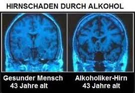

Der Alkohol hemmt die Signalübertragung im Gehirn, so kommt es zur Verlangsamerung der körperlichen Aktivitäten. Die Reaktionsfähigkeit und das Koordinationsvermögen sind vermindert und das Risiko für Unfälle dadurch erhöht. Aufgrund von Alkoholkonsum im jungen Alter kann sich das jugendliche Gehirn langsamer entwickeln. Schäden im Bereich des Hippocampus werden nachgewiesen. Es gibt zwei Hippocampi im Gehirn, einer befindet sich rechts und der andere auf der linken Seite des Gehirns. Der Hippocampi ist dazu da, Informationen vom Kurzzeit ins Langzeitgedächtnis zu übertragen. Wenn diee Funktion beeinträchtigt ist kommt es zu Gedächtnisproblemen. Bei Jugendlichen, die intensiv Alkohol trinken, ist mindestens eine Hälfte des Hippocampus verkleinert. Alkohol führt zu kurzfristigem Aufall der Speicherung in das Langzeitgehirn, deshalb haben viele die bekannten Blackout nach dem Konsum von Alkohol. Zum anderen tötet Alkohol direkt Nervenzellen ab, wenn dann noch andere Faktoren dazu kommen, wie Vitaminmangel, kann chronischer Alkoholismus zu Hirnschäden führen. Die Dosis von Alkohol und die Dauer der Dosis machen den Schaden aus. Auch das“ Wernicke-Korsakow-Syndrom“ kann entstehen,wenn man für einen sehr langen Zeitraum sehr viel Alkohol zu sich nimmt. Dieses Syndrom führt zu einer dauerhaften Beeinträchtigung der Gehirnleistung.
Der erste Teil von Alkohol wird schon im Mund über die Schleimhäute ins Blut geleitet. Ein weiterer Teil wird im Magen übernommen, die hauptsächliche Alkoholaufnahme ins Blut findet jedoch über den Dünndarm statt. Das Blut transportiert den Alkohol dann durch den ganzen Körper, unter anderem auch ins Gehirn.
Im Durchschnitt kann die Leber jede Stunde ungefähr 28 Gramm Alkohol verarbeiten. Sobald der Alkohol in den Blutkreislauf gelangt, versucht der Körper ihn mit einer Menge von etwa 20 Milligramm pro Deziliter pro Stunde zu metabolisieren, das bedeutet den Alkohol verarbeiten und zu verstoffwechseln. Beim metabolisieren kommt es außerdem sehr darauf an, wie viel Alkohol in dem Getränk war und die Menge, die man getrunken hat. Um ein kleines Glas Schnaps, mit einem Alkoholgehalt von ungefähr 40%, zu metabolisieren braucht der Körper durchschnittlich eine Stunde. Um ein Glas Bier (ca.5%) zu metabolisieren benötigt er etwa zwei Stunden und ein großes Glas Wein (ca.12%) drei Stunden. Allerdings können diese Zahlen je nach Alter, Gewicht und Körpergröße immer variieren.
Wie lange es dauert, bis die Wirkungen von Alkohol nachlassen, hängt ganz davon ab wie hoch die Alkoholmenge im Blut im Verhältnis zur Wassermenge im Blut ist. Dieses Verhältnis ist bei jedem Menschen unterschiedlich. So kann es sein, dass zwei Personen, die genau gleich viel Alkohol getrunken haben unterschiedlich lang brauchen, um keine Wirkung mehr zu spüren.
